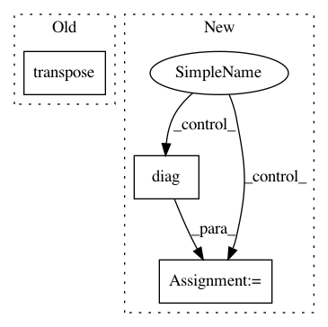

789d65f38f0949a3f03f61908a207cb558746769,stellargraph/layer/preprocessing_layer.py,GraphPreProcessingLayer,call,#GraphPreProcessingLayer#Any#,48
Before Change
// Build a symmetric adjacency matrix.
adj_T = tf.transpose(adj)
adj = (
adj
+ tf.multiply(
adj_T, tf.where(adj_T > adj, tf.ones_like(adj), tf.zeros_like(adj))
After Change
// Normalization
rowsum = tf.reduce_sum(adj, 1)
d_mat_inv_sqrt = tf.linalg.diag(tf.math.rsqrt(rowsum))
adj_normalized = tf.matmul(tf.matmul(d_mat_inv_sqrt, adj), d_mat_inv_sqrt)
return adj_normalized
In pattern: SUPERPATTERN
Frequency: 3
Non-data size: 3
Instances
Project Name: stellargraph/stellargraph
Commit Name: 789d65f38f0949a3f03f61908a207cb558746769
Time: 2019-12-19
Author: andrew.docherty@data61.csiro.au
File Name: stellargraph/layer/preprocessing_layer.py
Class Name: GraphPreProcessingLayer
Method Name: call
Project Name: geomstats/geomstats
Commit Name: 506b234094009d55d326f1ce957f53f15d4b65ee
Time: 2018-02-26
Author: ninamio78@gmail.com
File Name: geomstats/spd_matrices_space.py
Class Name:
Method Name: group_exp
Project Name: geomstats/geomstats
Commit Name: 506b234094009d55d326f1ce957f53f15d4b65ee
Time: 2018-02-26
Author: ninamio78@gmail.com
File Name: geomstats/spd_matrices_space.py
Class Name:
Method Name: group_log